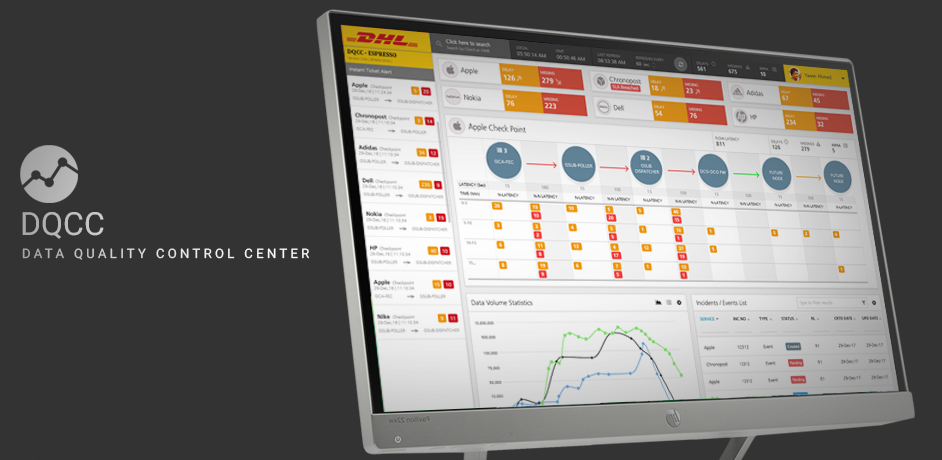
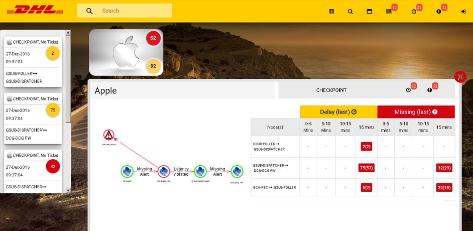
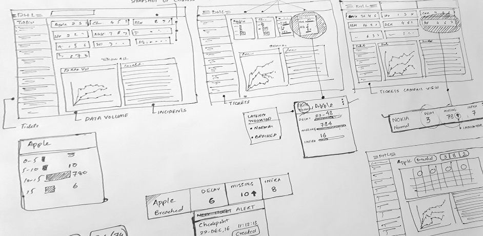
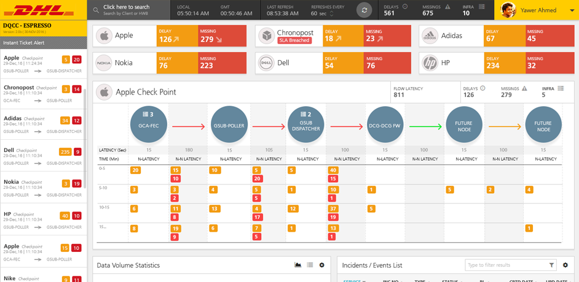

- Stories
- Data Quality Control Center
Data Quality Control Center
Data Quality Control Center as the name suggests is an application used to monitor the flow of data through checkpoints and taking action when necessary.

Solving the real problem
For DQCC the main objective is to track the issue and take action to mitigate it. Clarity and visibility of content is very important here, but one of the most important part is the
minimum interaction between the user and the system, so the user should be able to access almost everything is maximum 1 click.
The old DQCC design had a poor clarity and visibility of overall content. Although interaction was minimized to single click but the basic UI/UX guidelines were not followed.
Old Data Quality Dashboard

The icons on the top bar are very ambigous and doesnot provide clarity in a single go. Left sidebar has a lot of spacing issues and i would have been better to make it a fixed left sidebar and the clients shows a big icon that again takes
a lot of space plus a background with sunset and a truck makes one losses focus on the content.
User Experience in Action
DQCC Wireframes

- User Research
Analysis on DQCC required some research on the user part. Who are the target users and what is the most important task that they are perform. So based on this research we got 2 personas
Functional user
Functional user is more focused on the functionality of the system, like monitoring delays and missings in items and reporting them.
Management user
Management users are the one who wants to have a high level view of the system, like trends and overall performance
- Usability Analysis
Other part of the research is the challenge of usability. This part contains clarity and visibily of the content. For this we have 2 different parts one is the heuristic principles that are the general/ standard
guidelines while designing and application and the other is usability as per the flow of the application and as per user needs we will talk more about that in User Centric Designs UCD.
- User Centric Design (UCD)
User Centric Design as per the name suggests in designing keeping in mind the specific users of the system. There can be many users of a single system who want to look at a similar data from different perspective. What we have to do is to define the primary users and the main tasks that they perform, some tasks can be time critical so we need
to make sure that we provide a solution that contain minimum steps.
Improved Usability - Value Added
New Data Quality Dashboard

- Visibility of Content
We have merged the footer and the header to use more space for the content. Now the left bar is fixed and adjusts itself as per screen height also the alerts in the sidebar
are now more clear and meaningful. Clients tags have been made slimmer to adjust multiple clients in less space plus now they also have a tag in case of SLA breach.
- Clarity of Data
All the items in the top bar have now a clear title and data and one thing that was missing in the previous version was titles for different datasets as it can be problematic for people who are visually challenged, so we have cattered that to provide maximum clarity
- Reduced to single click
The number of clicks to report a missing or delay is 1. Either from left sidebar or the main section that shows details for a particular client.
Transformation From A to B
The transformation from old design to new is quite evident in terms of User Experience as well as design aesthetics, the value added is quite high in terms of visibility, clarity of content and saving time of the techical team.